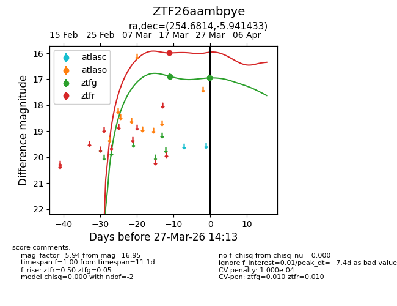
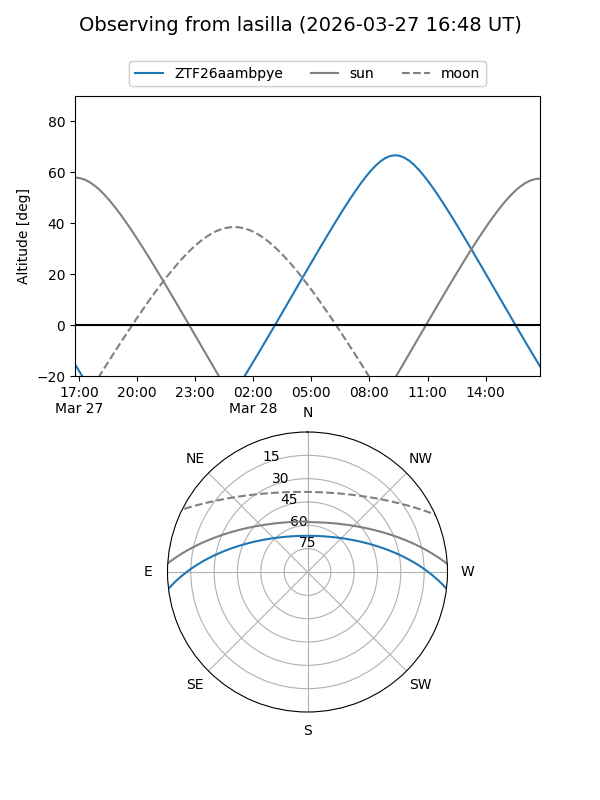
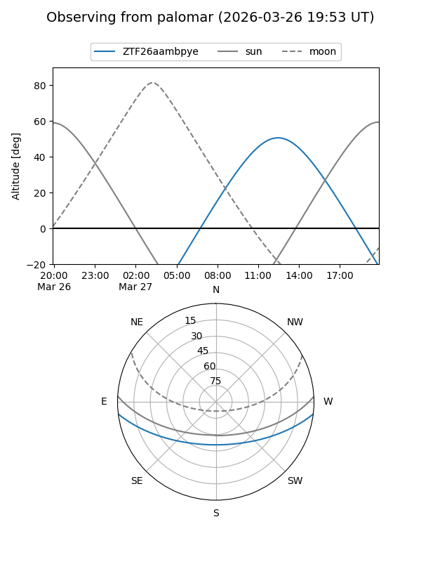
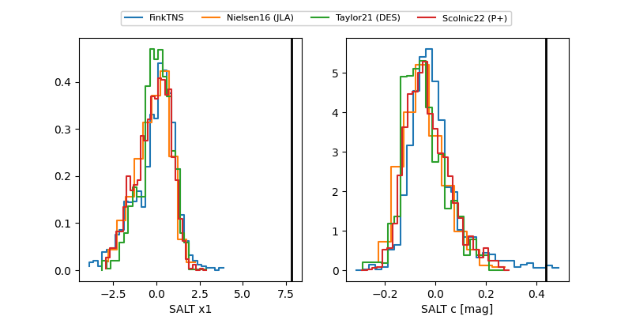

ZTF26aambpye
Target ZTF26aambpye at 2026-03-27 14:16
Aliases and brokers:
FINK: link
Lasair: link
ALeRCE: link
alt names
ZTF26aambpye (ztf,fink_ztf)
Coordinates:
equatorial (ra, dec) = 254.6814,-5.94143
equatorial (HMS+DMS) = 16:58:43.53,-05:56:29.16
galactic (l, b) = (13.6752,+21.76542)
Flags:
likely cv
Photometry:
last ztfg=16.95, ztfr=15.99
2 ztfg, 1 ztfr detections
Lightcurve

Visibility


Additional plots
